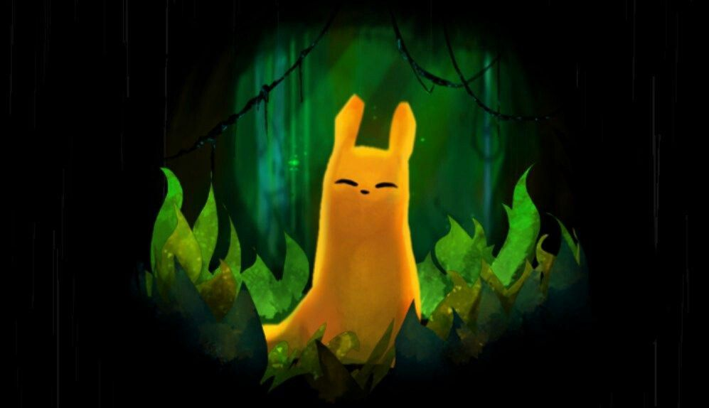
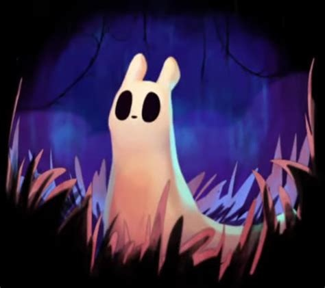
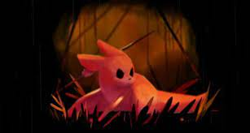

About
Rain World is an exploration-focused survival platformer set in a long-abandoned world, taken over by creatures both fascinating and fearsome. Bone-crushing intense rain pounds the surface regularly, making life as we know it almost impossible. The creatures in this world hibernate much of the time, but must spend the dry periods between rain finding food to last another day.
-
Character 1 - Monk
Weak of body but strong in spirit. In tune with the mysteries of the world and empathetic to its creatures, your journey will be a significantly more peaceful one.
The Monk serves as Rain World's easy mode, and begins the game in the Outskirts after the opening cutscene, which implies that they dove after their sibling, the Survivor.
-
Character 2 - Survivor
A nimble omnivore, both predator and prey. Lost in a harsh and indifferent land, you must make your own way, with wit and caution as your greatest assets.
The classic Rain World experience, The Survivor must deal with the ever-present threat of predators while trying to find their way through this hostile world.
-
Character 3 - Hunter
Strong and quick, with a fierce metabolism requiring a steady diet of meat. But the stomach won't be your only concern, as the path of the hunter is one of extreme peril.
The Hunter serves as the base game's hard mode and features several changes that make the game significantly more challenging.